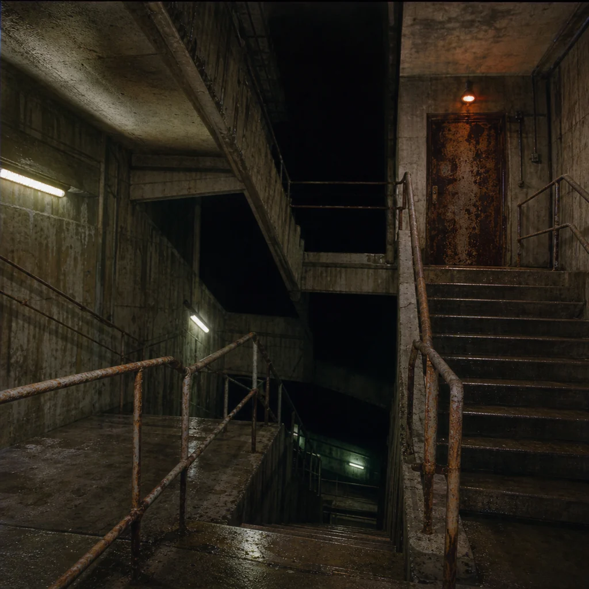

The yellow walls end abruptly. You cross a threshold into cold, sweating concrete. The air here smells of iron, rust, and stagnant water pool.
The fluorescent hum is gone, replaced by a low, rhythmic vibration that sounds like a massive engine or a slow heartbeat. Your breathing echoes loudly, but there is a second, lighter echo that drags behind your steps.
Underneath the concrete staircase, a dark crawlspace alcove seems to collect all the shadows in the room.